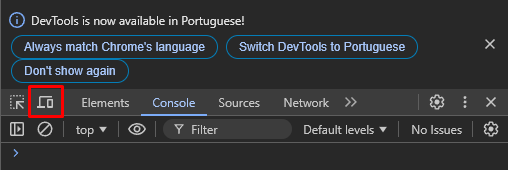
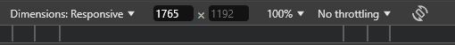
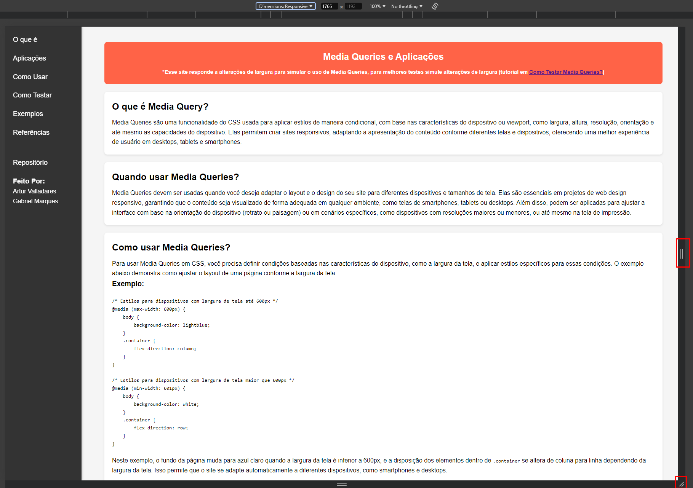
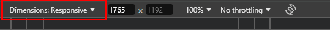
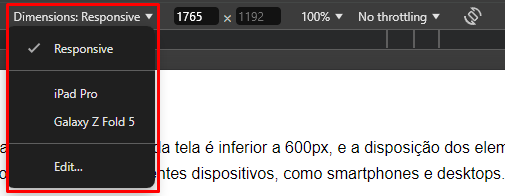
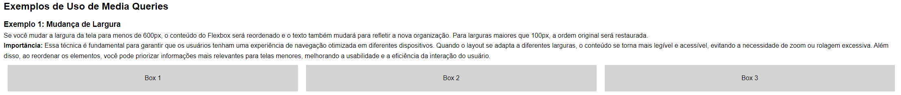
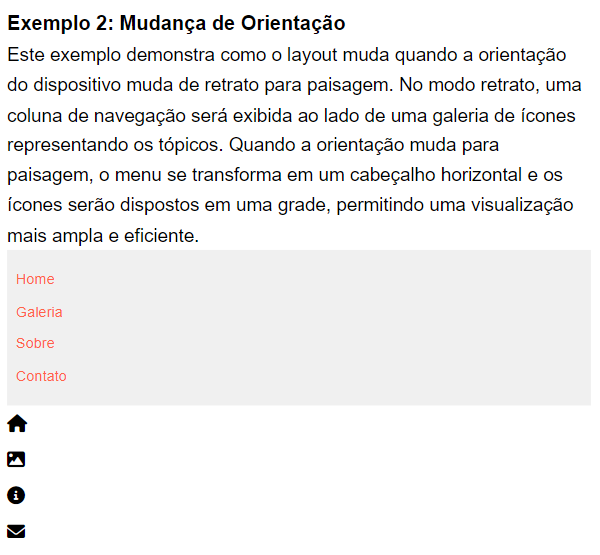

O que é Media Query?
Media Queries são uma funcionalidade do CSS usada para aplicar estilos de maneira condicional, com base nas características do dispositivo ou viewport, como largura, altura, resolução, orientação e até mesmo as capacidades do dispositivo. Elas permitem criar sites responsivos, adaptando a apresentação do conteúdo conforme diferentes telas e dispositivos, oferecendo uma melhor experiência de usuário em desktops, tablets e smartphones.
Quando usar Media Queries?
Media Queries devem ser usadas quando você deseja adaptar o layout e o design do seu site para diferentes dispositivos e tamanhos de tela. Elas são essenciais em projetos de web design responsivo, garantindo que o conteúdo seja visualizado de forma adequada em qualquer ambiente, como telas de smartphones, tablets ou desktops. Além disso, podem ser aplicadas para ajustar a interface com base na orientação do dispositivo (retrato ou paisagem) ou em cenários específicos, como dispositivos com resoluções maiores ou menores, ou até mesmo na tela de impressão.
Como usar Media Queries?
Para usar Media Queries em CSS, você precisa definir condições baseadas nas características do dispositivo, como a largura da tela, e aplicar estilos específicos para essas condições. O exemplo abaixo demonstra como ajustar o layout de uma página conforme a largura da tela.
Exemplo:
/* Estilos para dispositivos com largura de tela até 600px */
@media (max-width: 600px) {
body {
background-color: lightblue;
}
.container {
flex-direction: column;
}
}
/* Estilos para dispositivos com largura de tela maior que 600px */
@media (min-width: 601px) {
body {
background-color: white;
}
.container {
flex-direction: row;
}
}
Neste exemplo, o fundo da página muda para azul claro quando a largura da tela é inferior a 600px, e a
disposição dos elementos dentro de .container se altera de coluna para linha dependendo da
largura da tela. Isso permite que o site se adapte automaticamente a diferentes dispositivos, como
smartphones e desktops.
Como Testar Media Queries?
1.Clique com o botão direito em qualquer parte da página e selecione "Inspecionar" ou use o atalho Ctrl + Shift + I (Windows) ou Cmd + Option + I (Mac).
2.Na janela de Ferramentas do Desenvolvedor, clique no ícone de dispositivo móvel (Imagem1) ou use o atalho Ctrl + Shift + M (Windows) ou Cmd + Shift + M (Mac).
Imagem 1
3.No topo da janela, você verá um menu para escolher diferentes dispositivos ou inserir larguras de tela personalizadas (Imagem 2) ou alterar nas 3 barrinhas (Imagem 3).
Imagem 2

Imagem 3
4.Alterne entre diferentes tamanhos de tela para testar como as Media Queries respondem.
Bonus
Como testar diferentes dispositivos
1.Clique com o botão direito em qualquer parte da página e selecione "Inspecionar" ou use o atalho Ctrl + Shift + I (Windows) ou Cmd + Option + I (Mac).
2.Na janela de Ferramentas do Desenvolvedor, clique no ícone de dispositivo móvel (Imagem1) ou use o atalho Ctrl + Shift + M (Windows) ou Cmd + Shift + M (Mac).
3. No topo do painel, você poderá selecionar diferentes dispositivos predefinidos ou personalizar a largura e a altura do viewport manualmente (Imagem 4).
Imagem 4
4. Selecione dispositivos como smartphones, tablets e desktops (Imagem 5) para verificar como o layout responde às diferentes larguras de tela.
Imagem 5
Como testar diferentes orientações
1. Com as Ferramentas do Desenvolvedor abertas e o modo de dispositivos móveis ativado (topico anterior), localize o ícone de alternância de orientação (Imagem 6).

Imagem 6
2. Clique neste ícone para alternar entre as orientações "retrato" e "paisagem". Isso simulará a rotação do dispositivo, permitindo que você veja como o layout da página se adapta.
Exemplos de Uso de Media Queries
Exemplo 1: Mudança de Largura
Se você mudar a largura da tela para menos de 600px, o conteúdo do Flexbox será reordenado mostrado em coluna. Para larguras maiores que 100px, a ordem original será restaurada e mostrada em linha.
Importância: Essa técnica é fundamental para garantir que os usuários tenham uma experiência de navegação otimizada em diferentes dispositivos. Quando o layout se adapta a diferentes larguras, o conteúdo se torna mais legível e acessível, evitando a necessidade de zoom ou rolagem excessiva. Além disso, ao reordenar os elementos, você pode priorizar informações mais relevantes para telas menores, melhorando a usabilidade e a eficiência da interação do usuário.
Resultados:
Dispositivos com mais de 1000px de largura:
Dispositivos com menos de 1000px de largura:

Exemplo 2: Mudança de Orientação
Este exemplo demonstra como o layout muda quando a orientação do dispositivo muda de retrato para paisagem. No modo retrato, uma coluna de navegação será exibida ao lado de uma galeria de ícones representando os tópicos. Quando a orientação muda para paisagem, o menu se transforma em um cabeçalho horizontal e os ícones serão dispostos em uma grade, permitindo uma visualização mais ampla e eficiente.
Importância:A capacidade de um layout se adaptar à mudança de orientação é fundamental na experiência do usuário em dispositivos móveis. A mudança de orientação, seja de retrato para paisagem ou vice-versa, pode impactar significativamente como o conteúdo é apresentado. Layouts responsivos que se ajustam automaticamente garantem que os usuários tenham uma visualização otimizada, independentemente da orientação do dispositivo. Isso melhora a usabilidade, permitindo que os usuários acessem as informações de maneira mais eficiente e intuitiva.
Resultados:
Dispositivos no modo paisagem:

Dispositivos no modo retrato:
Exemplo 3: Estilos para Impressão
Ao tentar imprimir esta página, o header será oculto automaticamente para otimizar o conteúdo impresso.
Importância:Isso pode ser útil para remover elementos visuais não necessários na impressão.
Resultado: